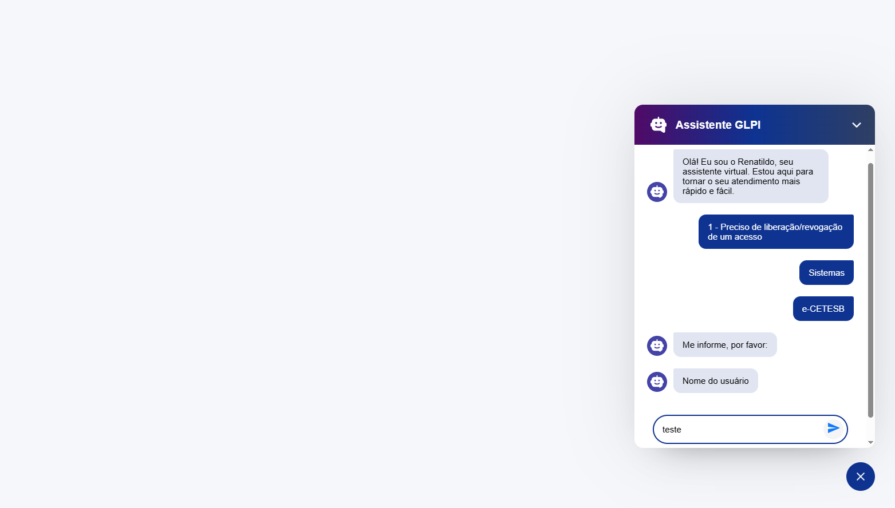

Sou estudante de Bacharelado em Sistemas de Informação e atuo como estagiária na área de tecnologia, participando de diferentes etapas do desenvolvimento de software. Tenho experiência com desenvolvimento front-end e back-end, banco de dados, integração de aplicações e utilização de ferramentas como Docker e Git. Com destaque para o front-end, onde aplico conhecimentos voltados à criação de interfaces funcionais, intuitivas e com boa experiência para o usuário.

Automação da abertura de chamados internos
Projeto criado para simplificar o processo de abertura de chamados internos através de uma interface conversacional.
Usuários precisavam navegar por formulários complexos, tornando o processo lento e sujeito a erros.
Desenvolvimento de um chatbot que guia o usuário durante todo o processo de abertura do chamado.
Processo de abertura de chamados mais ágil e intuitivo, facilitando a interação do usuário com o sistema.
Recomendação de filmes e séries para o público feminino
Dificuldade em encontrar recomendações alinhadas aos interesses do público-alvo.
Criação de uma plataforma de recomendações de filmes e séries em uma interface organizada, acessível e visualmente atrativa para o público feminino.